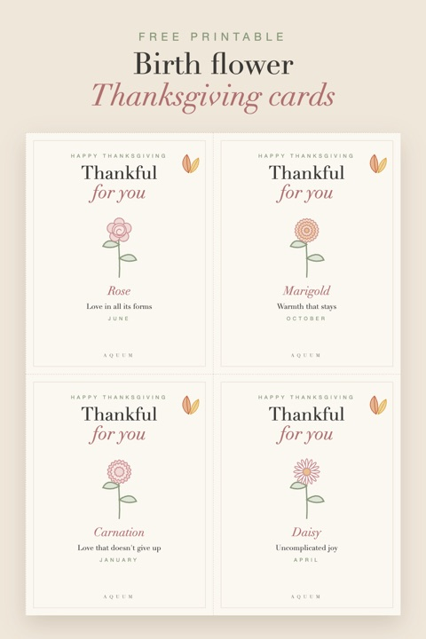

Free Printable Thanksgiving Cards with Birth Flowers
2026-10-03
Written by the team behind Aquum, a small birth flower gift shop. How we make money.

Thanksgiving is the one holiday about saying thank you, and a card is the easiest way to say it to a specific person. These cards read "Thankful for you", with the birth flower of the person you're thanking, what it means and their month.
Download the free Thanksgiving cards (PDF)
Three letter-size pages, four cards per page, one card for every month. Each card is 4.25 × 5.5 inches, the size of a standard A2 envelope.
How to make them
- Print on white or cream cardstock (65–110 lb), at 100% or "actual size".
- Cut along the dashed lines.
- Write a few lines on the back: one specific thing you're grateful for this year beats a long message.
Ways to use them
- On every plate: write each guest's name on the back and set it at their seat, with their own flower. Pair them with our birth flower place cards for a full table.
- For the host: tuck one into your hostess gift. Ideas in our Thanksgiving hostess gift guide.
- For someone who can't come: mail it a week ahead to family who are far away this year.
- At school or work: a teacher, a nurse, a coworker who covered for you. See gifts for teachers and gifts for nurses.
What to write
Keep it short and specific:
- "Thankful for you, and for every Sunday call this year."
- "Your flower means honest friendship. That's exactly what you've been to me."
- "Thank you for having us. Your table always feels like home."
More ideas, month by month, in what to write in a birthday card: the flower meanings work just as well for a thank-you.
Not sure of someone's flower? The birth flower finder tells you from a birthday. For the centerpiece, here are fall flowers and their meanings.
These cards are for personal use: print as many as you like. Please don't sell them or share the file on other sites; link to this page instead.
More free printables: all our birth flower printables in one place.
Writing the card? Here is what to write in a thank you card for every occasion.